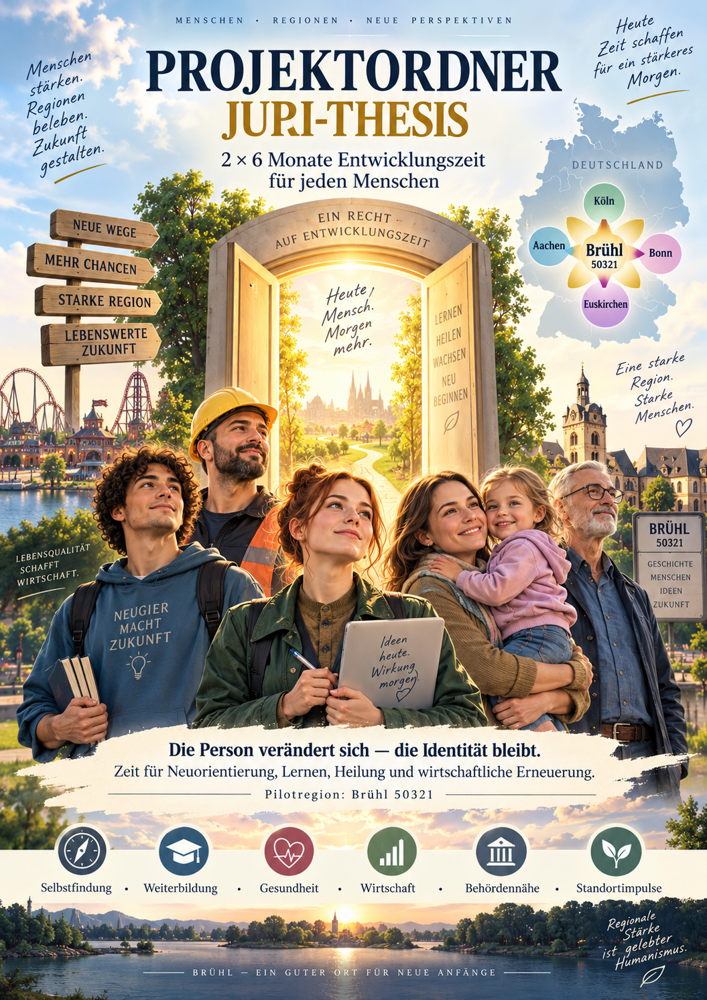
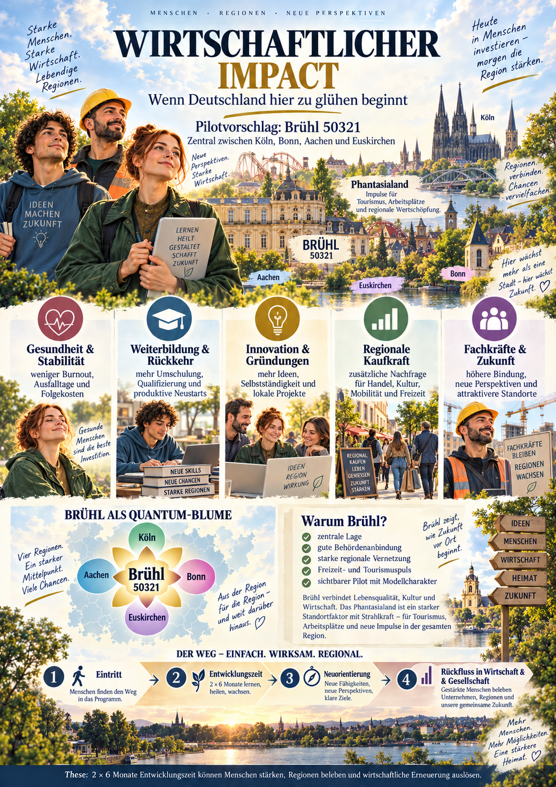
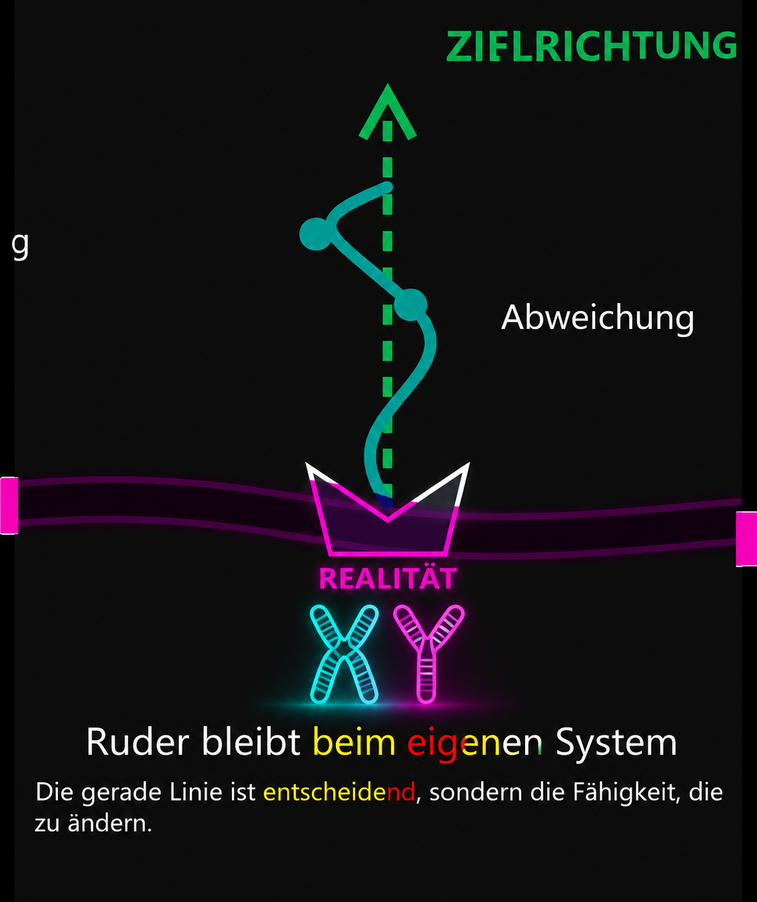

30 freiwillige Pilotplätze
Erwachsene aus Brühl und einem noch festzulegenden regionalen Einzugsgebiet sollen sich bewerben können. Verschiedene Lebenslagen gehören ausdrücklich dazu.
Brühl und Umgebung · Vorschlag für eine erste Runde
Der Herd streikt genau dann, wenn die Ausbildung beginnt. Für eine zweite Person hängt der Weg zu Arbeit und Kinderbetreuung an verlässlicher Mobilität. Eine dritte legt einen Einmalantrag über zwei Millionen Euro vor. Der Vorschlag für Brühl: 30 Menschen sollen je sechs Monate und einen persönlich vereinbarten Rahmen für ihren nächsten Schritt erhalten.

Die Idee auf einen Blick
Jeder Weg beginnt mit der Person: Was soll in sechs Monaten möglich werden, und welcher persönliche Rahmen trägt ihn?
Erwachsene aus Brühl und einem noch festzulegenden regionalen Einzugsgebiet sollen sich bewerben können. Verschiedene Lebenslagen gehören ausdrücklich dazu.
Die erste freiwillige Phase soll ab 18 möglich sein - auch mit 30, 40 oder nach 50, falls sie noch ungenutzt ist. Eine zweite Phase wird im Lebensmodell ab 50 vorgeschlagen.
Regelmäßige Mittel, konkrete Anschaffungen oder eine beantragte Einmalzahlung können verschiedene Wege sein. Sogar zwei Millionen Euro dürfen als großes Szenario gefragt werden; jeder persönliche Rahmen braucht eigene Finanzierung und Entscheidung.
Vorab genehmigte, gedeckte Alltagsanliegen sollen zügig laufen. Menschen prüfen Ausnahmen und entscheiden über Aufnahme, größere Summen und Änderungen. Die reale Runde braucht vorher einen zuständigen Träger.
Vier der 30 Plätze sind als Gründergruppe beantragt: für den Initiator und drei weitere, erst nach eigener Zustimmung zu benennende Menschen. 26 Plätze blieben für andere offen. Die gewünschte Reservierung muss unabhängig geprüft werden; die Stadt hat darüber nicht entschieden.
30 ganze Plätze · ein prüfbarer Entwurf
Ein Orientierungsregelwerk für die erste Runde - noch keine bewilligte Quote und keine echte Ausschreibung. Jeder Mensch kann mehrere Lebenslagen erfüllen; im Platzledger wird er genau einmal gezählt.
Der Initiator und drei von ihm vorgeschlagene Personen. Ihre Einwilligung und eine unabhängig geprüfte Rechtsform sind offen.
Zwei Menschen mit erschwertem Start. Was als Barriere gilt, wird nur mit freiwilligen, minimalen Angaben geklärt.
Ein vorgeschlagenes Suchfenster für Übergänge und verborgene Vorhaben. Ein regionaler Bedarf für genau fünf Plätze ist noch nicht belegt.
Vorgeschlagen ist eine eigenständig gestaltete Beteiligung junger Mütter mit Sorgeverantwortung. Träger, Zugang und Gleichbehandlung wären gesondert zu vereinbaren.
Freiwilliger Neuanfang nach Haftentlassung, abgestimmt mit unabhängiger Straffälligenhilfe. Das Merkmal wird nicht öffentlich ausgestellt.
Alle übrigen Erwachsenenalter und Lebenslagen bleiben erreichbar - auch Menschen ohne Studium oder mit spät erkannten Ideen.
Die sechs Gruppen sind exklusive Buchungsschubladen für Plätze, keine Behauptung, dass Menschen nur eine Eigenschaft haben. Die Alterskurve darunter ist ein zweites, kontinuierliches Denkmodell. Keine Software darf daraus ungeprüft Zusagen oder Ablehnungen erzeugen. Rechtlichen Gegenzug zur Gründergruppe lesen ↗
16 Punkte · Altersmodell zur Diskussion
Die neue Diskussionskurve gewichtet jüngere Erwachsene stärker: Bei 18 ist der relative Wert 2, bei 65 1. Die Kurve fällt anfangs stärker und wird später flacher; ab 65 bleibt sie bei 1. Die 16 Punkte zeigen die Kurve, sie sind keine 16 Plätze und keine Altersgrenzen. Auch 31, 47 oder 72 bleiben im Modell enthalten.
w(a) = 1 + ((65 - min(a, 65)) / 47)² für ganze Jahre a ≥ 18. Ein Gewicht ist noch keine individuelle Aufnahmechance. Ob eine Altersgewichtung für einen öffentlichen Pilot überhaupt sachlich, erforderlich und verhältnismäßig wäre, muss vor Anwendung geprüft werden.

01 / Die Grundthese
Entwicklung ist kein Privileg für den Moment nach einer Krise. Sie kann ein gestaltbarer Abschnitt des Lebens sein.
Zwei getrennte Phasen von je sechs Monaten, insgesamt zwölf Monate pro Person im vorgeschlagenen Lebensmodell.
Menschen wählen selbst, ob sie lernen, eine Tätigkeit wechseln, Sorgearbeit ordnen, etwas gründen oder neue Ziele prüfen.
Ein Lebenszustand kann sich verändern, ohne dass der Wert oder die Identität einer Person verschwindet.
S(P,t₁) ≠ S(P,t₂)I(P,t₁) = I(P,t₂)
Die Formel ist eine erklärte Denkfigur. Sie beweist weder eine Rechtsfolge noch eine messbare wirtschaftliche Wirkung. Ein allgemeiner 2×6-Monate-Anspruch ist ein politischer Vorschlag, kein bestehendes Recht.
02 / Ein konkreter Anfang
Brühl liegt auf der Köln–Bonn-Achse und hat eine städtische Wirtschaftsförderung sowie Bahn-, Stadtbahn- und Busanschlüsse. Das macht einen Dialog mit Verwaltung, Betrieben, Bildung und Zivilgesellschaft denkbar. Aachen und Euskirchen gehören zum weiteren regionalen Blick.
Die „Brühl-Blume“ ist ein Bild für diese Verbindungen – eine Idee für Zusammenarbeit, keine maßstäbliche Landkarte. Phantasialand ist ein realer Brühler Standort; eine Beteiligung am vorgeschlagenen Pilot ist nicht zugesagt.
Quellen und Grenzen ansehen03 / Wirtschaftslogik
Bildung, Gründung, passende Arbeit und regionale Nachfrage sind mögliche Wirkwege. Kosten, Verdrängung und fehlende Wirkung gehören in dieselbe Rechnung.
Gedankenversuch / 13 von 26
Im Gedankenversuch hätten 13 der 26 offenen Plätze einen messbaren wirtschaftlichen Rückfluss; für die übrigen 13 wird auch ein ungünstiger Verlauf geprüft. Ein ausbleibender Rückfluss bedeutet weder Kriminalität noch persönliches Scheitern, tatsächlicher Schaden wäre getrennt zu prüfen. Die Wirkung der vier gewünschten Gründerplätze ist ebenfalls offen. Mit C als vollständigen Kosten je Platz, R als zusätzlich belegtem Nutzen je einem der 13 Plätze und H als zusätzlich belegtem Schaden gilt im engen Haushaltsmodell: Saldo = 13 × R + Gründerwirkung − 30 × C − H. Bei R = 2C fehlen ohne Gründerwirkung mindestens 4C + H; bei R = 5C bleiben rechnerisch 35C − H. Keine dieser Größen ist für Brühl gemessen.
Neue Lern- und Berufswege könnten entstehen. Entscheidend ist, was nach der Phase tatsächlich bleibt.
Ein Teil der Zahlungen könnte vor Ort ausgegeben werden. Umlauf ist noch kein zusätzlicher Nettoertrag.
Gründungen, Kultur- oder Gemeinwohlprojekte sind möglich, aber nicht zugesagt.
Finanzierung, Vertretung, Verwaltung, Mitnahme und Verdrängung werden mitgemessen.
Offenes Modell statt Regler
Ein fester Beispielwert ist keine Obergrenze. Die Entwicklungsleistung soll zusätzlich zu bestehenden Ansprüchen gestaltet werden. Dafür braucht es transparente Kriterien, einen gedeckten Haushalt und ausdrückliche Regeln für die Anrechnung in den betroffenen Leistungssystemen.
Für eine Person reicht eine kleine Anschaffung; eine andere möchte eine große Einmalzahlung statt fortlaufender Zusatzwünsche beantragen. Die Summe ist individuell, bis hin zum bewusst extremen Zwei-Millionen-Beispiel. Vor Auszahlung muss der persönliche Rahmen genehmigt und finanziert sein.
Zusatzleistung und Betrag verstehen ↗Geldfluss, neue Wertschöpfung und öffentlicher Rückfluss sind getrennte Spuren. Ein Pilot muss sie messen, statt sie vorweg zu addieren.
Den rechtlichen Einwand prüfen ↗04 / Vom Bild zur Prüfung
Ein kommunaler Versuch braucht freiwillige Partner, verlässliche Verträge, einen fairen Zugang und eine unabhängige Auswertung. Die Stadt kann die nationale Vision nicht allein in geltendes Recht verwandeln.
Rechtsform, Geld, Zielgruppen und Zuständigkeiten klären.
Teilnehmende, Betriebe, Verwaltung und Träger entwerfen Zugang und Rückkehr.
30 Plätze je Runde als Pilotannahme. Bewerbungen beginnen sechs Monate zuvor; Wiederbewerbung bleibt möglich.
Erfolge, Kosten, Ungleichheit und unerwartete Folgen gegen einen Vergleich bewerten.
Wie fühlt sich der Weg aus Sicht einer Person an? Die interaktive Demo zeigt Bewerbung, Auswahl, Rückmeldung und nächsten Anlauf.
Chancenreise öffnen ↗05 / Bildwelt
Die gelieferten Bilder tragen Stimmung und Erzählidee. Verbindliche Aussagen stehen als lesbarer Text daneben.


Einladung zum Denken und Prüfen
Der nächste Schritt wäre ein unverbindliches Gespräch über einen freiwilligen, bezahlbaren und auswertbaren Brühler Pilot. Noch ist nichts eingereicht oder zugesagt.